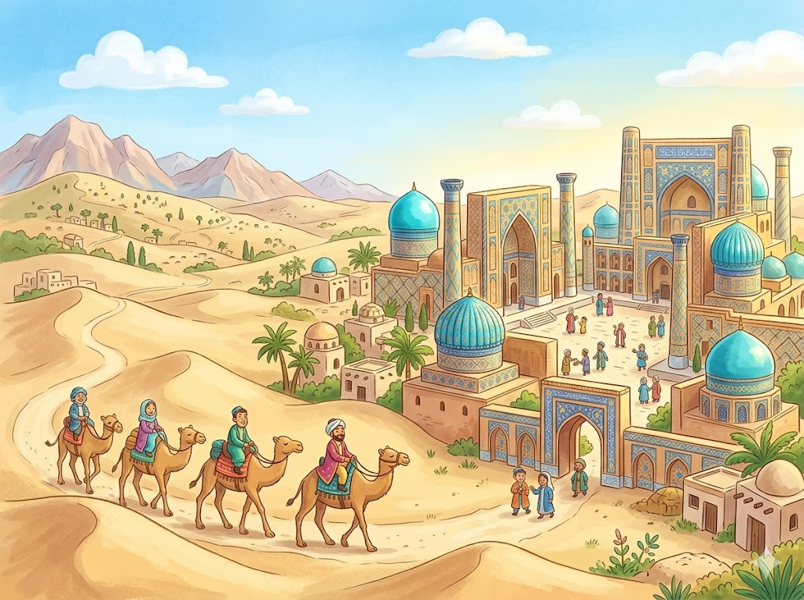
Hier stehen die wichtigsten Daten zu deinem Land. In der App baust du daraus deinen eigenen Steckbrief.
| Hauptstadt | Taschkent |
| Kontinent | Asien (Zentralasien) |
| Sprache | Usbekisch |
| Währung | Som |
| Einwohner | rund 37 Millionen Menschen |
| Fläche | rund 449.000 km² |
| Großer Berg | Alpomish, rund 4.668 m |
| Nachbarländer | Kasachstan, Kirgisistan, Tadschikistan, Afghanistan und Turkmenistan |
In Usbekistan gibt es viele berühmte Orte. Diese vier solltest du kennen.
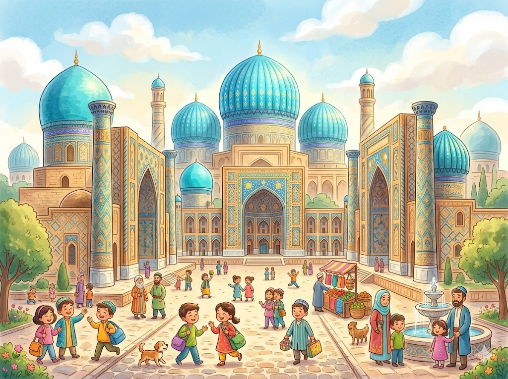
Die Stadt SamarkandSamarkand ist eine sehr alte Stadt. Berühmt sind ihre blauen Kuppeln. Sie leuchten in der Sonne wie der Himmel. Auf den Mauern glänzen viele bunte Kacheln. Die Stadt gehört zum Welterbe.
Grüne Wörter für die AppSamarkandblauen Kuppelnwie der Himmelbunte KachelnWelterbe
Die SeidenstraßeFrüher führte die Seidenstraße durch das Land. Auf ihr brachten Händler Waren von weit her. Sie reisten mit Kamelen durch die Wüste. Stoffe, Gewürze und Seide wurden so verkauft. Viele Städte wurden dadurch reich.
Grüne Wörter für die AppSeidenstraßeHändlerKamelenSeidereich
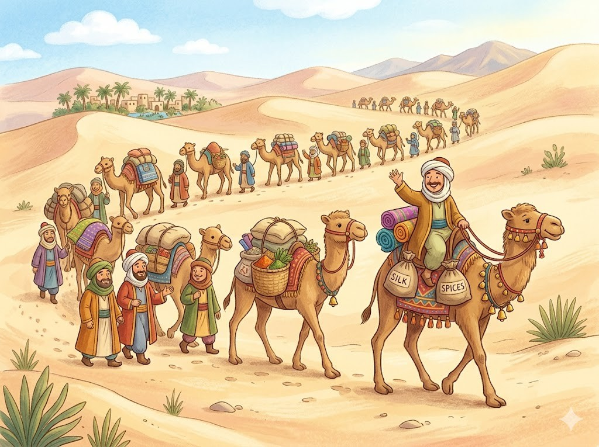
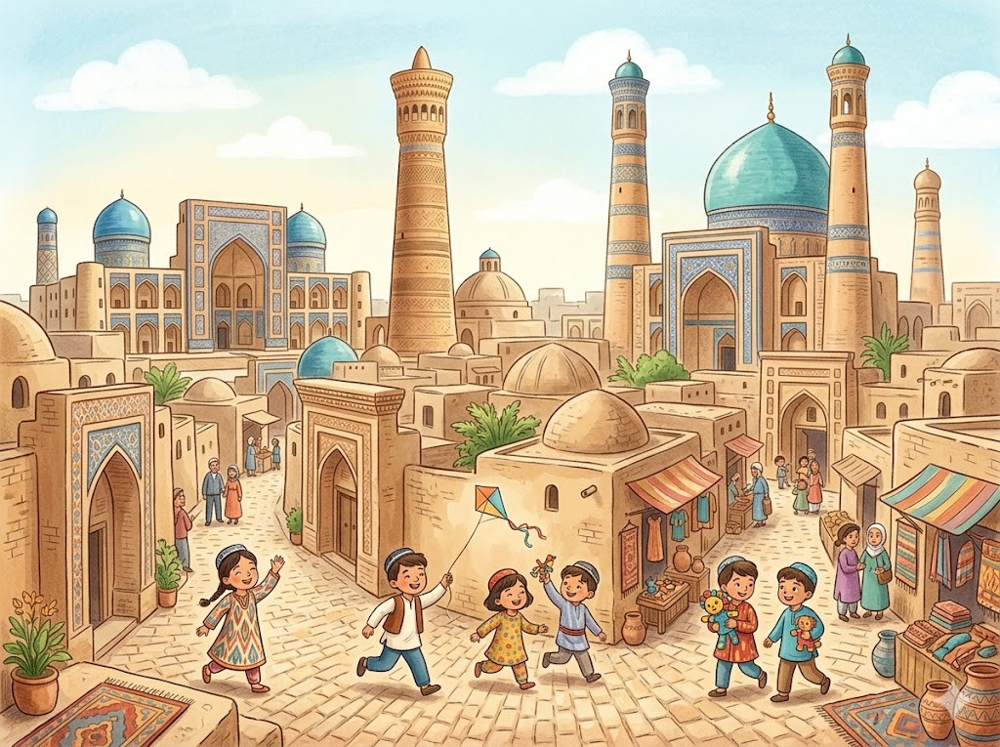
Die Altstadt von BucharaBuchara ist eine weitere alte Stadt. In der Altstadt stehen viele Moscheen und Türme. Die engen Gassen sind schon sehr alt. Hier wirkt alles wie vor langer Zeit. Die Altstadt gehört zum Welterbe.
Grüne Wörter für die AppBucharaMoscheen und Türmeengen Gassenvor langer ZeitWelterbe
Die Wüste und die SteppeEin großer Teil von Usbekistan ist trocken. Im Westen liegt eine weite Wüste aus Sand. Daneben gibt es flache Steppen mit Gras. Im Sommer wird es dort sehr heiß. Im Winter kann es richtig kalt werden.
Grüne Wörter für die ApptrockenWüste aus SandSteppensehr heißkalt
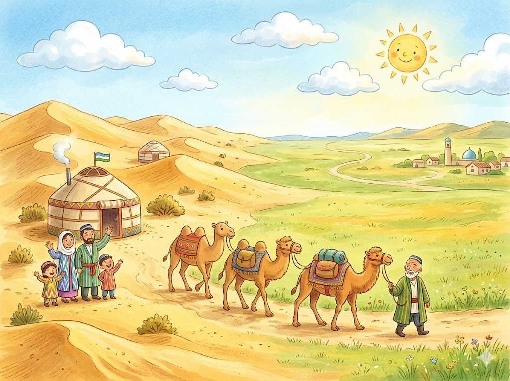
Diese Tiere leben in Usbekistan und sind ganz besonders.
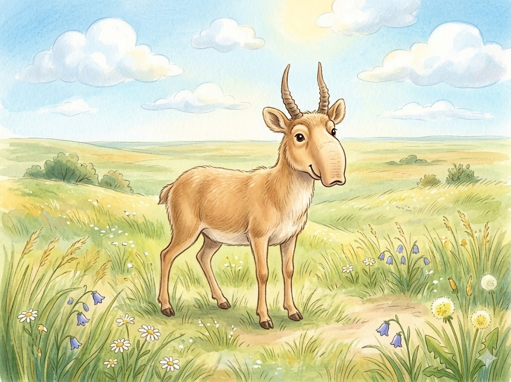
Die Saiga-AntilopeDie Saiga-Antilope lebt in der Steppe. Sie hat eine lustige, dicke Nase. Die Nase wärmt im Winter die kalte Luft. Die Saiga kann sehr schnell rennen. Heute gibt es nur noch wenige von ihnen.
Grüne Wörter für die AppSaiga-AntilopeSteppedicke Naseschnell rennennur noch wenige
Das KamelIn der Wüste leben Kamele mit zwei Höckern. In den Höckern speichern sie Fett als Vorrat. So kommen sie lange ohne Wasser aus. Früher trugen sie Waren über die Seidenstraße. Auch heute sind Kamele noch nützlich.
Grüne Wörter für die AppKamelezwei Höckernohne WasserSeidenstraßenützlich
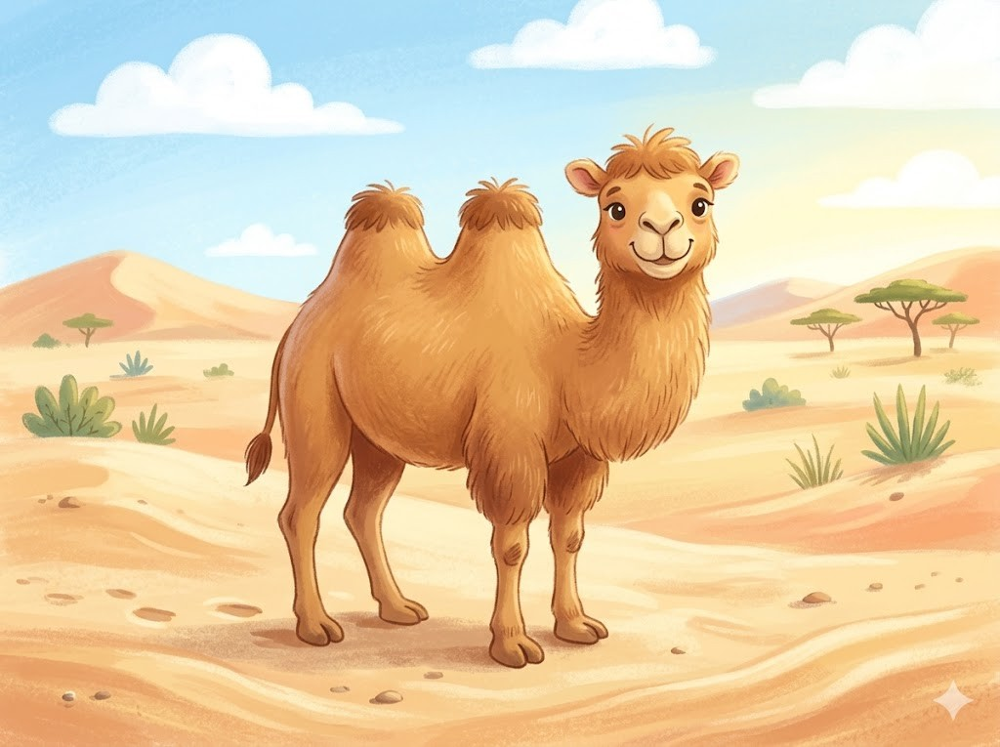
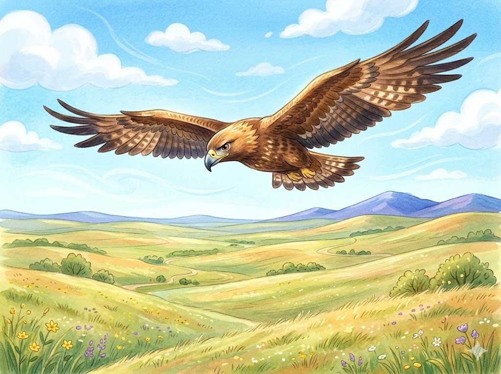
Der AdlerÜber der Steppe kreist oft ein Adler. Er ist ein großer, kräftiger Greifvogel. Mit scharfen Augen sucht er nach Beute. Dann stürzt er schnell nach unten. Manche Menschen jagen früher mit Adlern.
Grüne Wörter für die AppAdlerGreifvogelscharfen Augennach untenjagen
In der App kannst du beim Essen das Foto nehmen oder dein Gericht selbst malen.
PlovPlov ist das Nationalgericht von Usbekistan. Es ist ein Reisgericht mit Fleisch. Dazu kommen Karotten und Zwiebeln. Alles wird zusammen in einem großen Topf gekocht. Zu Festen kochen alle gemeinsam Plov.
Grüne Wörter für die AppPlovNationalgerichtReisgericht mit FleischKarottengroßen Topf
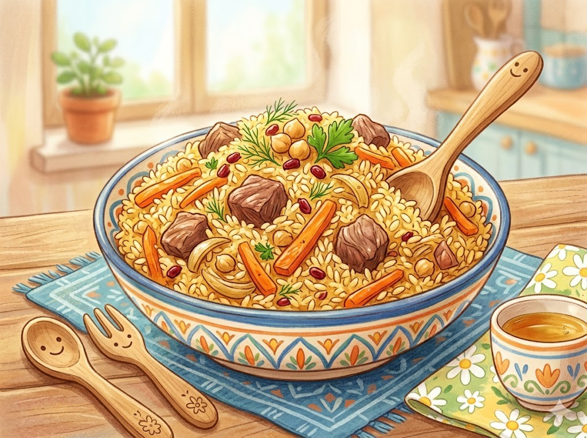
Non-BrotNon ist ein rundes Fladenbrot. Es wird in einem heißen Lehmofen gebacken. In der Mitte ist es mit einem Muster verziert. Frisch schmeckt es am allerbesten. Brot ist in Usbekistan sehr wichtig.
Grüne Wörter für die AppNonFladenbrotLehmofenMusterFrisch
SamsaSamsa sind kleine, gefüllte Teigtaschen. Innen sind sie mit Fleisch oder Kürbis gefüllt. Sie werden im heißen Ofen gebacken. Außen sind sie schön knusprig. Kinder essen Samsa gern als Snack.
Grüne Wörter für die AppSamsaTeigtaschenFleisch oder KürbisknusprigSnack
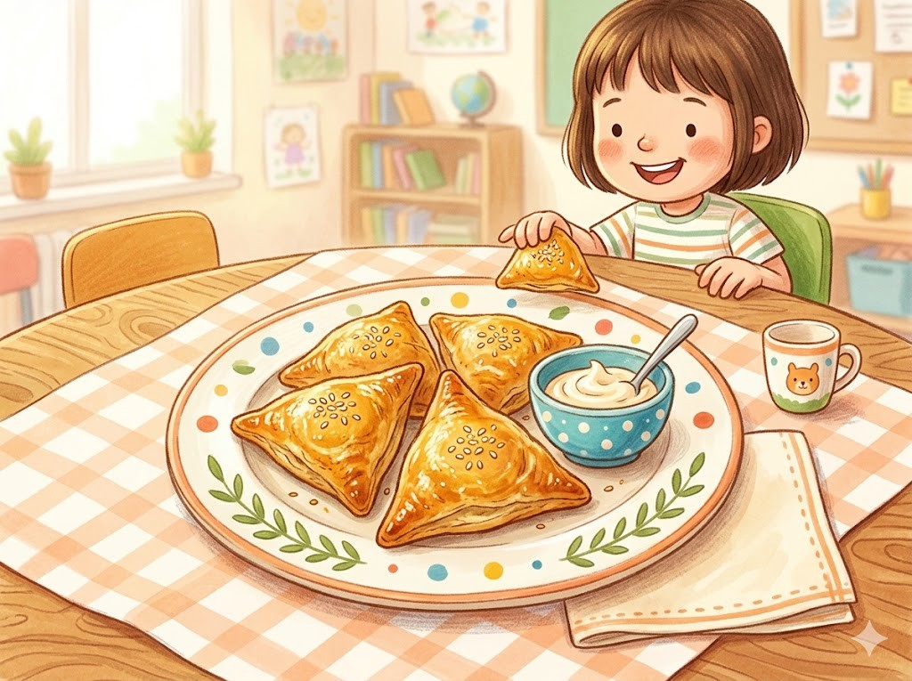
Die Nationalmannschaft von Usbekistan heißt die Weißen Wölfe. Zum allerersten Mal hat sich Usbekistan für die WM 2026 qualifiziert. Das ist ein großer Tag für das Land. Ein bekannter Spieler ist Eldor Shomurodov. Er spielt in der Türkei bei Istanbul Başakşehir.
Grüne Wörter für die Appdie Weißen WölfeWM 2026ein großer TagEldor ShomurodovBaşakşehir
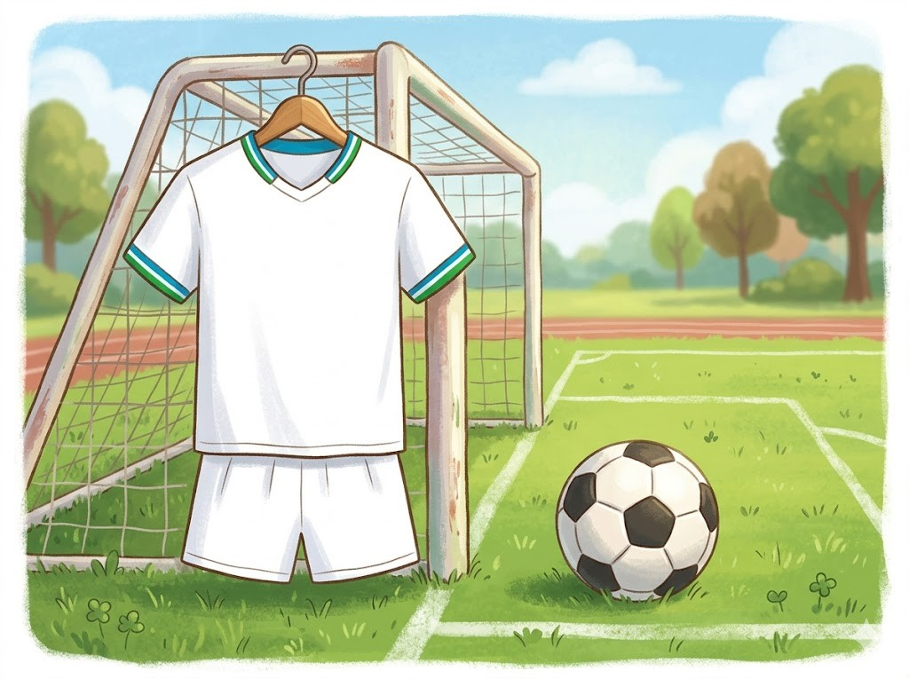
In der SchuleDie Kinder in Usbekistan gehen gern zur Schule. Sie lernen Usbekisch lesen und schreiben. Viele lernen auch Russisch dazu. Nach der Schule helfen sie oft zu Hause. Danach spielen sie mit ihren Freunden.
Grüne Wörter für die AppSchuleUsbekischRussischhelfen sie oft zu Hausespielen
Feste und FreizeitFußball ist bei den Kindern sehr beliebt. Bei großen Festen tanzen und singen alle zusammen. Es gibt dann viel gutes Essen. Die Familien treffen sich und feiern lange. Auch die Kinder dürfen lange aufbleiben.
Grüne Wörter für die AppFußballtanzen und singengutes Essenfeiernaufbleiben
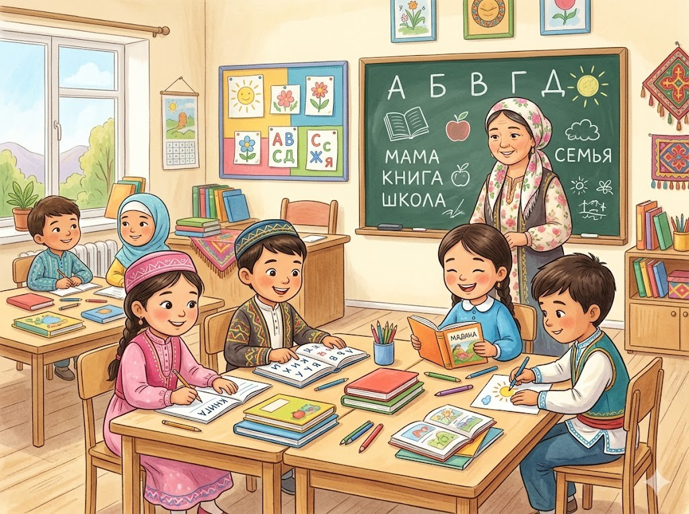